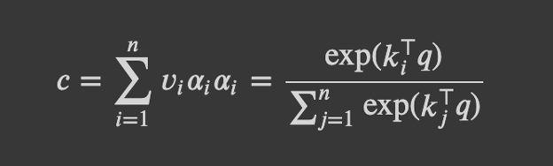
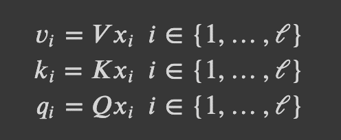
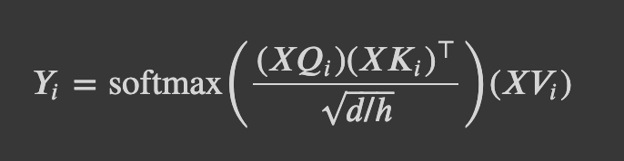
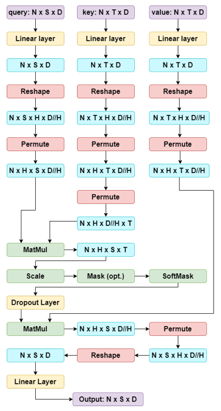
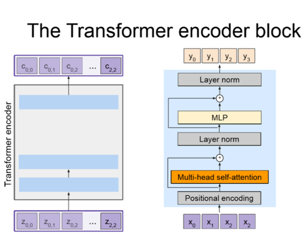
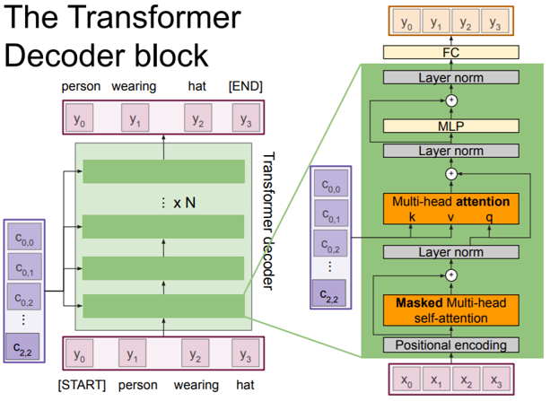

Aula 08 · Atenção e Transformers
Transformers
⚠️ Este conteúdo é uma tradução para português, gerada automaticamente por IA, a partir do material original em inglês do curso CS231n (Stanford University). Consulte o link "Fonte original" abaixo para o texto original.
Fonte original (inglês): Transformer Overview · CS231n, Stanford University ↗
Visão geral do Transformer
Em "Attention Is All You Need", Vaswani et al. apresentaram o Transformer, que introduz paralelismo e permite aos modelos aprender dependências de longo alcance, ajudando assim a resolver dois problemas centrais das RNNs: a lentidão do treinamento e a dificuldade de codificar dependências de longo alcance. Transformers são altamente escaláveis e paralelizáveis, o que permite treinamento mais rápido, modelos maiores e melhor desempenho em tarefas de visão e linguagem. Os Transformers estão começando a substituir RNNs e LSTMs e podem, em breve, substituir também as convoluções.
Por que Transformers?
- Transformers são ótimos para trabalhar com sequências de entrada longas, já que o cálculo de atenção olha para todas as entradas. Em contraste, RNNs têm dificuldade para codificar dependências de longo alcance. LSTMs são bem melhores para capturar dependências de longo alcance, por usarem as portas de entrada, saída e esquecimento.
- Transformers podem operar sobre conjuntos não ordenados ou sobre sequências ordenadas com codificações posicionais (usando a codificação posicional para acrescentar ordem aos conjuntos). Em contraste, RNN/LSTM esperam uma sequência ordenada de entradas.
- Transformers usam computação paralela, em que todas as pontuações de alinhamento e de atenção de todas as entradas podem ser calculadas em paralelo. Em contraste, RNN/LSTM usam computação sequencial, já que o estado oculto de um passo de tempo só pode ser calculado depois dos estados anteriores, o que as torna frequentemente lentas para treinar.
Atenção multi-head
Vamos relembrar os conceitos da unidade de atenção para nos ajudar com os Transformers.
- Atenção por produto escalar:

Com a consulta q (D,), os vetores de valor {v_1,...,v_n}, em que v_i (D,), os vetores de chave {k_1,...,k_n}, em que k_i (D,), os pesos de atenção a_i e a saída c (D,). A saída é uma média ponderada dos vetores de valor.
- Self-Attention: obtemos valores, chaves e consultas a partir da entrada.

Combinando os dois itens acima, podemos agora implementar a atenção multi-head por produto escalar com escala para Transformers.
- Atenção multi-head por produto escalar com escala: aprendemos uma matriz de parâmetros V_i, K_i, Q_i (DxD) para cada cabeça i, o que aumenta a expressividade do modelo para prestar atenção em diferentes partes da entrada. Aplicamos um termo de escala (1/sqrt(d/h)) à atenção por produto escalar descrita antes, para reduzir o efeito de vetores de grande magnitude.

Podemos então aplicar dropout, gerar a saída da camada de atenção e, por fim, adicionar uma transformação linear à saída da operação de atenção, o que permite ao modelo aprender a relação entre as cabeças e, assim, melhorar sua expressividade.
Atenção multi-head passo a passo, com as dimensões intermediárias
Muita coisa acontece ao longo da atenção multi-head, então esperamos que este diagrama ajude a esclarecer as etapas intermediárias e como as dimensões mudam depois de cada etapa!

Algumas dicas sobre Permute e Reshape
Para criar as múltiplas cabeças, dividimos a dimensão de embedding pelo número de cabeças e usamos Reshape (por exemplo, Reshape nos permite ir do formato (N x S x D) para (N x S x H x D//H)). É importante notar que Reshape não muda a ordem dos dados. Ele apenas pega os dados originais e os "remodela" nas dimensões fornecidas. Usamos Permute (ou Transpose) para reorganizar a ordem das dimensões dos dados (por exemplo, Permute nos permite reorganizar as dimensões de (N x S x H x D//H) para (N x H x S x D//H)). Note por que precisamos usar Permute antes de Reshape depois do último MatMul. Nosso tensor tinha o formato (N x H x S x D//H), mas, para remodelá-lo para (N x S x D), primeiro precisamos garantir que as dimensões H e D//H estejam uma ao lado da outra, porque Reshape não muda a ordem dos dados. Por isso, usamos Permute primeiro para reorganizar as dimensões de (N x H x S x D//H) para (N x S x H x D//H) e depois podemos usar Reshape para obter o formato (N x S x D).
Etapas do Transformer: encoder-decoder
Bloco Encoder
O papel do bloco Encoder é codificar todas as características da imagem (em que as características espaciais são extraídas por uma CNN pré-treinada) num conjunto de vetores de contexto. Os vetores de contexto produzidos são uma representação da sequência de entrada num espaço de dimensão maior. Definimos o Encoder como c = T_W(z), em que z são as características espaciais da CNN e T_w(.) é o encoder do Transformer. No artigo "Attention Is All You Need", é usado um encoder de Transformer composto por N blocos de encoder (N = 6, D = 512).

Vamos percorrer as etapas do bloco Encoder!
- Primeiro recebemos um conjunto de vetores de entrada X (em que cada vetor de entrada representa uma palavra, por exemplo).
- Depois adicionamos a codificação posicional aos vetores de entrada.
- Passamos os vetores com codificação posicional pela camada de self-attention multi-head (em que cada vetor presta atenção em todos os outros). A saída dessa camada nos dá um conjunto de vetores de contexto.
- Temos uma conexão residual depois da camada de self-attention multi-head, que nos permite contornar a camada de atenção se ela não for necessária.
- Depois aplicamos normalização de camada (Layer Normalization) à saída, que normaliza cada vetor individualmente.
- Depois aplicamos uma MLP a cada vetor individualmente.
- Temos então outra conexão residual.
- Uma última normalização de camada na saída.
- E, por fim, o conjunto de vetores de contexto C é produzido!
Bloco Decoder
O bloco Decoder recebe o conjunto de vetores de contexto C produzido pelo bloco Encoder e um conjunto de vetores de entrada X e produz um conjunto de vetores Y que define a sequência de saída. Definimos o Decoder como y_t = T_S(y_{0:t-1},c), em que T_D(.) é o decoder do Transformer. No artigo "Attention Is All You Need", é usado um decoder de Transformer composto por N blocos de decoder (N = 6, D = 512).

Vamos percorrer as etapas do bloco Decoder!
- Recebemos o conjunto de vetores de entrada X e os vetores de contexto C (produzidos pelo bloco Encoder).
- Depois adicionamos a codificação posicional aos vetores de entrada X.
- Passamos os vetores com codificação posicional pela camada de self-attention multi-head mascarada. A máscara garante que só prestemos atenção nas entradas anteriores.
- Temos uma conexão residual depois dessa camada, que nos permite contornar a camada de atenção se ela não for necessária.
- Depois aplicamos normalização de camada à saída, que normaliza cada vetor individualmente.
- Em seguida, passamos a saída por outra camada de atenção multi-head, que recebe os vetores de contexto produzidos pelo bloco Encoder e a saída da normalização de camada. Nesta etapa, a chave vem do conjunto de vetores de contexto C, o valor vem do conjunto de vetores de contexto C, e a consulta vem da saída da etapa de normalização de camada.
- Temos então outra conexão residual.
- Aplicamos outra normalização de camada.
- Aplicamos uma MLP a cada vetor individualmente.
- Outra conexão residual.
- Uma última normalização de camada.
- E, por fim, passamos a saída por uma camada totalmente conectada, que produz o conjunto final de vetores de saída Y, a sequência de saída.
Notas adicionais sobre normalização de camada e MLP
Normalização de camada: como visto na implementação dos blocos Encoder e Decoder, usamos normalização de camada depois das conexões residuais, nos dois blocos. Lembre-se de que, na normalização de camada, normalizamos ao longo da dimensão das características (ou seja, aplicamos LayerNorm sobre as características da imagem). Usar normalização de camada nesses pontos ajuda a evitar problemas de gradientes que desaparecem ou explodem, ajuda a estabilizar a rede e pode reduzir o tempo de treinamento.
MLP: tanto o bloco encoder quanto o decoder contêm redes feed-forward totalmente conectadas, aplicadas por posição, "aplicadas a cada posição separadamente e de forma idêntica" (Vaswani et al.). As transformações lineares usam parâmetros diferentes entre as camadas. FFN(x) = max(0, xW_1 + b_1)W_2 + b_2. Além disso, a combinação de uma camada de self-attention com uma camada feed-forward ponto a ponto reduz a complexidade exigida por camadas convolucionais.
Recursos adicionais
Recursos adicionais relacionados à implementação: